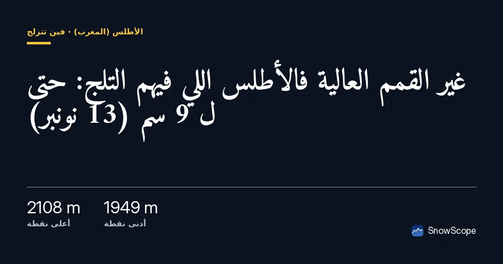

غير القمم العالية فالأطلس اللي فيهم التلج: حتى ل 9 سم (13 نونبر)
يوم الجمعة 13 نونبر، التلج فالأطلس محصور فقط فالمناطق الأعلى. حتى واحد من المحطات التلاتة—Habri، Michlifen، أو Oukaïmeden—ماعندو تلج على البيستات ديالو. أعمق التلج كاين بغاية على أعلى القمم: حوالي 40 كم² ديال التراب ديال التلج، مع علو ديال التلج يوصل لحتى 9 سم فبعض البلايص.
شوف توقعات التلج مباشرة ديال Habri فالتطبيق ديال SnowScopeالعلو ديال التلج، التنبيهات والخريطة 3D، فابور.
فين الكاين التلج دابا
Habri ماعندوش تلج على الجهة الفوقانية ديالو. Michlifen ماعندوش تلج من القاعدة ديالو فـ 1,870 م حتى القمة ديالو فـ 2,070 م. Oukaïmeden، الأعلى من التلاتة فـ 3,258 م، كذاك ماعندوش تلج على البيستات ديالو اليوم.
التلج اللي بقا عبر الأطلس كاين بغاية على القمم الفوقانية جداً والحروف—التراب لفوق فين حتى هاد المحطات ماوصلوش. فـ 2,929 م، الارتفاع ديال النص فـ Oukaïmeden، ماكاين والو. التلج كاين غير على القمم لفوق 3,000 م برا.
| المحطة | العلو ديال التلج | تلج جديد، 72 س | جاي، الأيام الجاية | الفوق |
|---|---|---|---|---|
| Habri | 0 سم | 0 سم | 0 سم | 2108 م |
| Michlifen | 0 سم | 0 سم | 0 سم | 2070 م |
| Oukaïmeden | 0 سم | 0 سم | 0 سم | 3258 م |

التلج كاذوب بسرعة
ثلاثة أيام لقبل، فـ 11 نونبر، 50 كم² ديال الأطلس كانو مغطيين بالتلج. يوم الجمعة، هاد الحاجة انخفضت لـ 40 كم². التوقعات ديال 16 نونبر كاتبان 30 كم²—خسارة مستمرة حيت الدفي ديال نونبر كاياكل فالتلج الرقيق ديال بداية الموسم.
هاد الحاجة عادية للأطلس فنص نونبر. الجبال الشحة ديال شمال إفريقيا ماكاتحتفظش بالتلج بزاف فهاد الوقت ديال السنة. التلج كاياتي ويمشي مع كل عاصفة؛ بين العاصيف، الشمس والريح كاياعملو الشغل بسرعة.
شنو الطبيعي لنونبر؟
التاريخ كايبان هاد الحاجة ماغريبة. بالنضر لـ 46 شتاء لي فاتو، العلو ديال التلج الطبيعي فهاد اليوم فـ 1,970 م قرب Michlifen كان 0 سم. فالارتفاع ديال النص ديال Oukaïmeden فـ 2,929 م، العمق ديال نونبر الطبيعي كذاك كان 0 سم. الشتاء الجافة فبداية الموسم هي النورمال للأطلس.
التلج ديال 9 سم اليوم على أعلى القمم فالواقع أرقق من شنو اللي تشافو فـ 43 من آخر 46 شتاء فنفس الارتفاع. التلج ديال بداية الموسم هنا كاعيش على الحد ديال البقاء.
شنو جاي لقدام
ماكاين تلج جديد متوقع فحتى واحد من المحطات التلاتة حتى 16 نونبر أو بعد. واش العاصفة الجاية كاتجي، Oukaïmeden كاتكون عندو أفضل الفرصة بحال التلج بسبب الارتفاع ديالو. القمة ديالو فـ 3,258 م كاترتفع برا على Habri (2,108 م) و Michlifen (2,070 م)، هكاك كاتبقى فالهوا البارد أطول.
Habri و Michlifen كاحتاجو عاصفة أبرد—واحد اللي كاتدفع الخط ديال التجميد منخفض بزاف—باش البيتا التلج من الشتا الجديدة. ليهال، التوقعات كاتبان انحفاض ديال المتابعة حتى 16 نونبر: الأطلس كاديرة نحو فترة جافة، والعبة الصغيرة ديال التلج كاتبقى تتراجع.
شنو المعنى ديال هاد الحاجة للجبال
التلج ديال بداية الموسم فالأطلس هو الماء المخزون فالجبال. هاد الطبقة الرقيقة ديال 9 سم على القمم الفوقانية فآخر الحال كاتغدي تطعم الأنهار والسدود ديال الحوايز فتحت واش الربيع جاي. بس فنونبر، قبل التلج العميق ديال الشتاء الحقيقي كاياتي، الأطلس ماعندوش بزاف ديال الماء الغالي هاك.
التلج اللي كاتشوف فـ SnowScope هو صورة ديال اليوم ديال 13 نونبر. التوقعات كاتتبدل بسرعة فهاد الجهة ديال العالم. الجبال الجافة والعبة الرقيقة كيفاش تخلي الأحوال كاتتبدل فالساعات.
نصايح للي كيتزلجو
- ماتحسش المحطة مفتوحة أو عندها تلج قابل للتزلج غير لأن SnowScope كايبان تلج قريب. تشوف الويبسايت ديال المحطة ديالك باش تشوف حالة الأسانسير وتاريخ الفتح.
- أي تلج على البيستات ديال الأطلس الآن هو رقيق وناضر. واش أنت فالجبل، بقى على البيستات المعلمة: العشب والحجارة كاتتخبا تحت بضع السنتيمترات ديال التلج.
- الحدث ديال التلج الجديد الكبير ممكن يكون بعيد أيام. شوف الخريطة ديال SnowScope مرة ثانية يوم قبل ما تسفر باش تشوف واش الأحوال تبدلت.
- Oukaïmeden هي الأعلى من المحطات التلاتة وكاتحتفظ بالتلج أطول. برمج الزيارة ديالك هنا واش كنت بغيت أفضل الفرصة ديال بداية الموسم.
- حط تنبيه ديال التلج فالتطبيق ديال SnowScope باش تعرف واش التلج الجديد جاي فـ Habri أو Michlifen—التنبيهات كاتقولك واش الوقت جا تترجع.
على هاد الأرقام
العلو ديال التلج فالمحطات هو أكثر تلج فالجهة الفوقانية فالتاريخ المكتوب؛ هادو تقديرات لمنطقة، ماشي قياس فنقطة وحدة. التوقعات يمكن تتبدل. ديما شوف النشرة الرسمية ديال الانهيارات قبل ما تخرج من البيست.
كيفاش تستاشهد بهاد المقال
للبحث، التعليم ولا الصحافة: الأرقام والرسومات تقدر تعاود تخدم بيهم بحرية تحت CC BY 4.0 مع هاد الاستشهاد.
SnowScope (2026), غير القمم العالية فالأطلس اللي فيهم التلج: حتى ل 9 سم (13 نونبر), https://snowscope.app/blog/ar/2026/11/atlas-morocco-atlas-snow-check-13-november-2026.html, تشاف ف 2026-11-13
SnowScope (Atlas Labs). (2026, November 13). غير القمم العالية فالأطلس اللي فيهم التلج: حتى ل 9 سم (13 نونبر). SnowScope snow reports. https://snowscope.app/blog/ar/2026/11/atlas-morocco-atlas-snow-check-13-november-2026.html
BibTeX
@misc{snowscope2026atlasmoroccoatlassnowche,
author = {{SnowScope (Atlas Labs)}},
title = {غير القمم العالية فالأطلس اللي فيهم التلج: حتى ل 9 سم (13 نونبر)},
year = {2026},
month = nov,
howpublished = {\url{https://snowscope.app/blog/ar/2026/11/atlas-morocco-atlas-snow-check-13-november-2026.html}},
note = {Published 2026-11-13 13:02 UTC; accessed 2026-11-13}
}· CC BY 4.0 · الطريقة، الداتا والأدوات →
Habri: التلج والحرارة حسب العلو، هاد الشتا مقارنة مع اللي فاتت (الأدوات) →
تابع Habri
فابور: ميساج ملي يجي التلج، والتوقعات كل صباح.
تقارير أخرى ديال التلج

كناش عملي على Oukaïmeden فالأطلس الكبير: إمتى كيجي التلج غالبا، شحال، أشمن جهات تختار وكيفاش توصل من مراكش.

Michlifen، حدا إفران، التلج فيها كيجي نوبات قصار ماشي موسم كامل. شنو كيبينو 46 شتوة اللي فاتو، علاش العلو العادي صفر، وكيفاش تكون تما فالنهارات المزيانين.

لا توجد تلج بعد في Oukaïmeden يوم 12 نونبر. قمم الأطلس ما فيها حتى حاجة؛ الموسم الشتوي عادة كايكون فأقصى حاله فشهر مارس بـ 58 سم في الجهة الفوقانية.